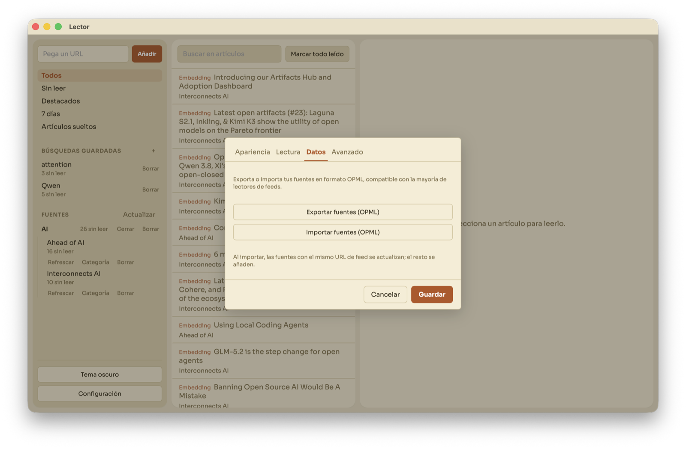
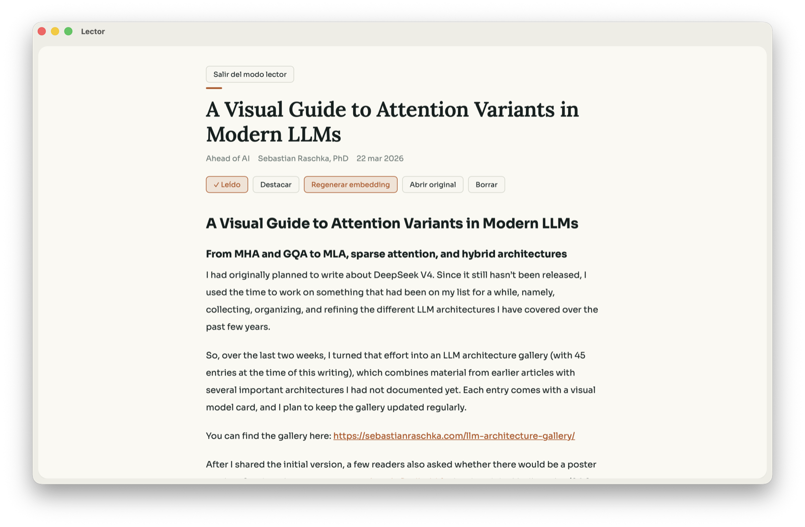

Feeds, the usual way
RSS, Atom and JSON feeds. Paste a URL and Lector discovers the feed for you — no hunting for the orange icon.
A desktop feed reader · Tauri + Rust
Lector is a calm RSS/Atom/JSON reader for your desktop. Feeds, saved searches and smart feeds live in a local database on your machine — nothing leaves it. No cloud, no account, no tracking.
$ curl -fsSL github.com/SalvaIvars/hub/releases
Binaries are published as GitHub Releases. Pick your platform — installers land in the releases feed as soon as they are built.
$ curl -fsSL https://github.com/SalvaIvars/hub/releases/latest/download/Lector.dmg -o Lector.dmg $ open Lector.dmgDownload .dmg →
> Invoke-WebRequest https://github.com/SalvaIvars/hub/releases/latest/download/Lector-Setup.msi -OutFile Lector.msi > .\Lector.msiDownload .msi →
$ wget https://github.com/SalvaIvars/hub/releases/latest/download/lector-amd64.deb $ sudo apt install ./lector-amd64.debDownload .deb →
$ git clone https://github.com/SalvaIvars/hub.git $ cd hub $ npm run tauri devView source on GitHub →
RSS, Atom and JSON feeds. Paste a URL and Lector discovers the feed for you — no hunting for the orange icon.
Posts are stored bare; full article content is extracted on demand, so the reader shows you the text, not the clutter.
Full-text search over everything you've saved, powered by SQLite FTS5. Instant, offline, private.
Saved searches that understand meaning. Semantic embeddings run locally on ONNX — no API keys, no network required.
Group sources into collapsible folders and read every source in a category at once.
Light, dark and sepia. Pick a font, size and line height — the reader is yours to shape.
Import and export your subscriptions with OPML. Your library is never locked in.
Navigate the whole app from the keyboard: mark, star, open, extract. Speed reading without a mouse.


No cloud. Your library lives in a local SQLite database on your machine.
No account. There is nothing to sign up for and no one to sign in to.
No tracking. No telemetry, no analytics, no spy pixels. Nothing phones home.
No API keys. Semantic smart feeds run on a local ONNX model — offline by design.
Lector is built by Salva Ivars, a developer who kept losing track of the web he actually wanted to read. It started as a personal tool — a reader that is fast, local and quiet — and grew into the app you see here.
Built with Tauri and Rust on a hexagonal architecture, with a React frontend. Open source under the MIT license: github.com/SalvaIvars/hub.